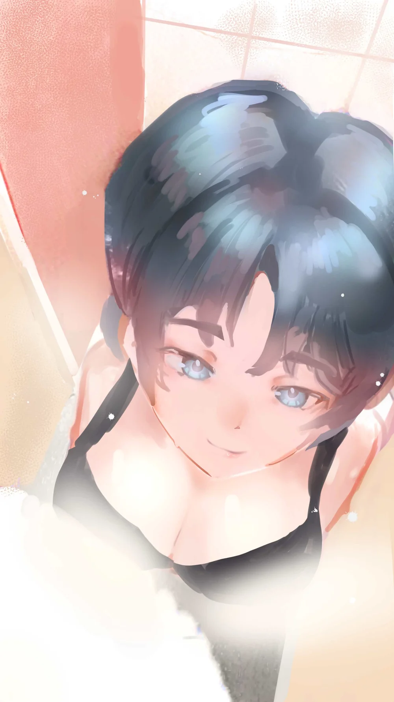
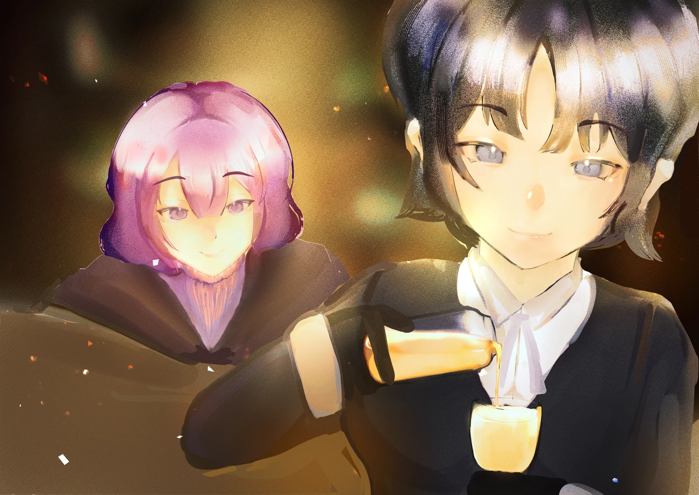
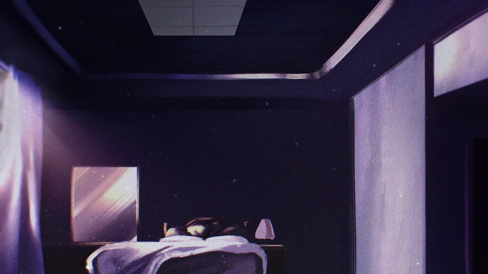
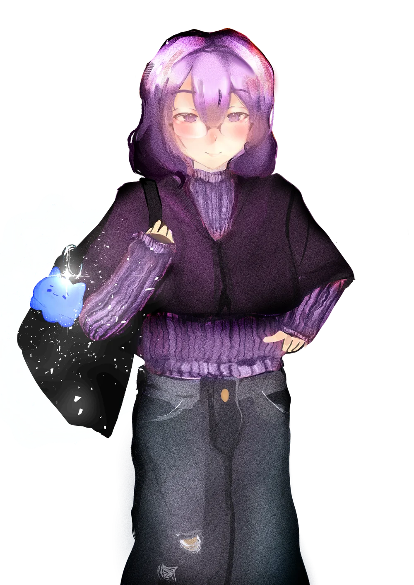
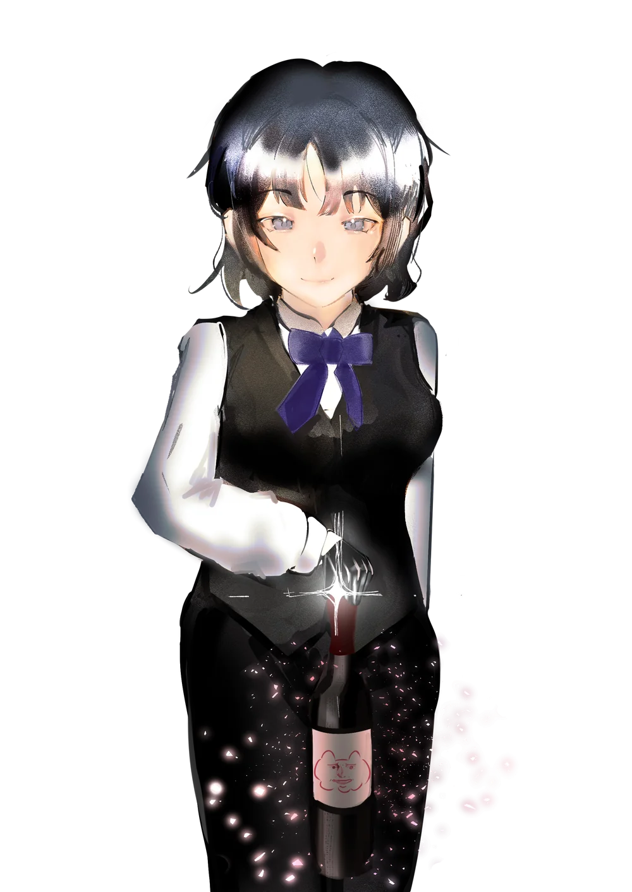

課堂之外，還有生活。
大學、宿舍與酒吧，串起青與棠的生活。課表、工作與朋友的邀約，讓他們在不同場合再次碰面，也逐漸看見彼此的另一面。

01 / 一場誤會的開始01 / 熟悉的日常
室友癒的一次邀約，讓青在酒吧遇見了調酒師棠。外貌帶來的誤認，成了兩人認識的開端。
一杯蜂蜜酒、一筆還沒付清的酒錢，讓原本沒有交集的兩個人，有了再次見面的理由。

02 / 第一印象之外02 / 印象之外
長得像學妹的學弟，和長得像學長的學姐。當第一印象與真實身分錯了位，你會如何重新認識他們？
回到大學課堂，青才發現，那位調酒師也是學校裡的助教。從課堂到下課後的日常，他開始認識棠在不同身分下的模樣。
EVERYDAY / 他們生活的世界
大學、宿舍與酒吧，串起青與棠的生活。課表、工作與朋友的邀約，讓他們在不同場合再次碰面，也逐漸看見彼此的另一面。
青與室友癒總有說不完的玩笑；與棠的關係，則從朋友開始慢慢靠近。故事的重心，是這些日常如何累積成信任與在意。
青希望成為能讓人依靠的人，棠卻習慣先把事情扛下來。兩個都在乎對方的人，仍要學著詢問、傾聽，並把真正的感受說出口。
404DEMO / 劇情節錄



青
青：我先走了。
THE STORY CONTINUES / 故事待續
這次，讓他們親自介紹自己。
認識角色